Префектура Ибараки · Хитати и Китаибараки · еда
Север Ибараки на тарелке: ужин по «Книге о чае» и рестораны, где готовят из местного
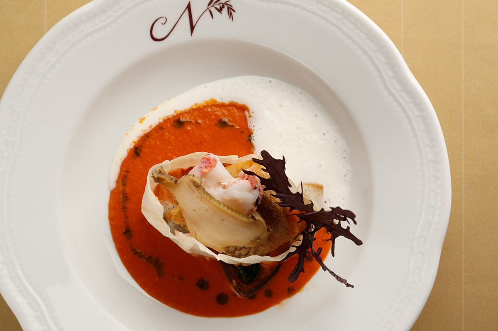
Шесть городов и посёлков на севере префектуры Ибараки решили рассказывать о себе через еду. Местные шефы собирают на одной тарелке море, горы, историю и культуру края, и лучше всего это было видно на ужине, который в 2020 году устроили по мотивам «Книги о чае».
Проект
Шесть муниципалитетов в одном блюде
Север Ибараки это Хитати, Хитатиота, Такахаги, Китаибараки, Хитатиомия и посёлок Даиго. В 2018 году здесь начался проект «Гастрономия севера Ибараки»: природу, историю, культуру и пейзажи края в нём пересказывали через одно блюдо. В проекте участвовали рыбаки и фермеры, рестораны, гостиницы и музеи, и у каждого была своя история.
Продуктов здесь хватает. У побережья Дзёбан ловят рыбу и морепродукты, горы Окукудзи дают свои дары, в каждый сезон созревают свои фрукты. Море и горы когда-то связывала соляная дорога, а по реке Кудзи ходили грузовые лодки, и вместе с людьми и товарами по краю расходились и вкусы.
В эпоху Нара, в VIII веке, составили «Хитати-но куни фудоки», описание провинции Хитати. О здешних землях там сказано, что они обширны, богаты дарами моря и гор, а люди живут в достатке, словно в стране вечной жизни Токоё.
Тэнсин
Идзура: беседка над морем и музей
Ужин, о котором пойдёт речь, был посвящён Тэнсину Окакуре.
Его дом и беседка принадлежат Институту искусства и культуры Идзура при Университете Ибараки. Шестигранная беседка Рокакудо стоит на скалах у самой воды: здесь Тэнсин размышлял, а иногда закидывал в море удочку. Зимы он проводил в Бостонском музее изящных искусств, а лето в Идзуре, и именно отсюда вёл свою международную работу. С беседки и с веранды его бывшего дома открывается вид, глядя на который легче понять человека, который на мировой сцене добивался возрождения японского искусства.
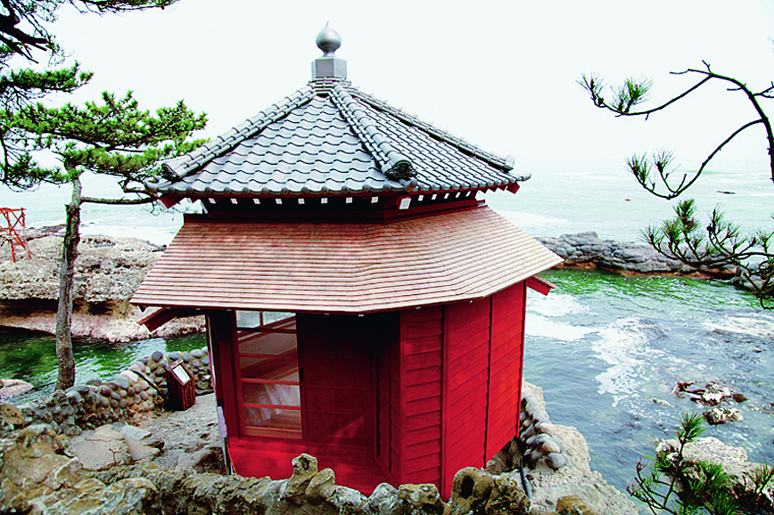
Рокакудо, Институт искусства и культуры Идзура Университета Ибараки
- Адрес
- префектура Ибараки, Китаибараки, Оцу-тё, Идзура, 727-2
- Выходные
- понедельник (если это праздник, то вторник)
- Цены / Вход
- 400 иен
Неподалёку стоит Художественный музей памяти Тэнсина в Идзуре. Его здание спроектировал Хироси Найто, один из ведущих архитекторов Японии, и сама архитектура музея считается частью здешнего пейзажа.
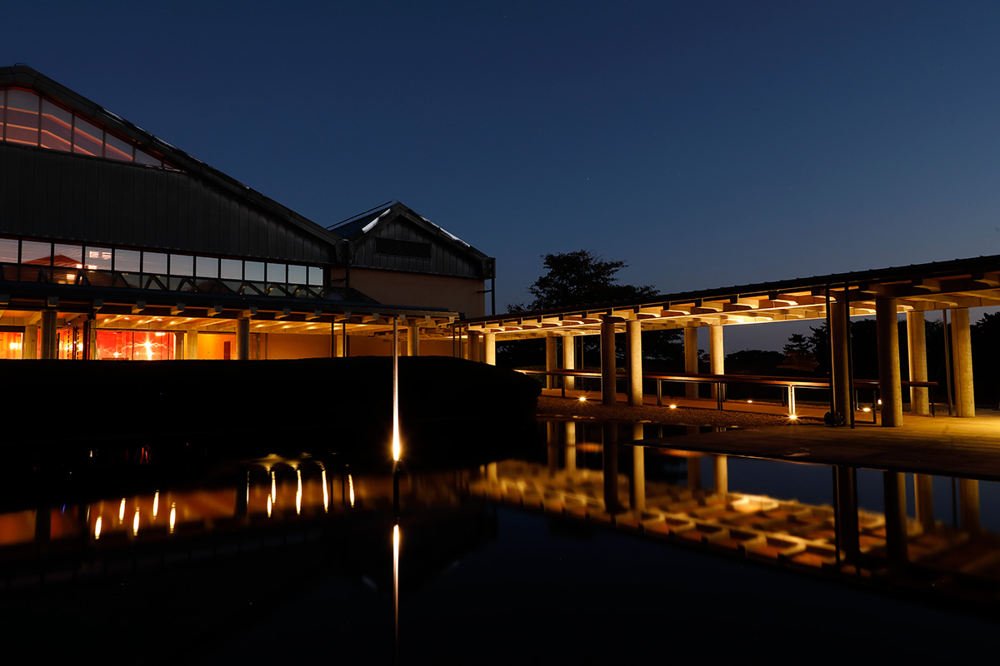
Художественный музей памяти Тэнсина в Идзуре
- Адрес
- префектура Ибараки, Китаибараки, Оцу-тё, Цубаки, 2083
- Телефон
- +81 293-46-5311
- Часы работы
- 9:30–17:00, вход до 16:30
- Выходные
- понедельник
Ужин
Вечер по «Книге о чае»
В ноябре 2020 года, пока музей был закрыт на ремонт, его входной зал открыли на один вечер ради ужина «Книга о чае». Гости начали его в Рокакудо: директор института провёл их по местам, где Тэнсин прожил последние десять лет, и в тот день гостям разрешили зайти в главный дом бывшей усадьбы.
Аперитивом стало сакэ «Кодай сакэ Мурасаки сикибу» из древнего сорта риса, который выращивают в Ибараки; его делают в сакэварне «Исака сюдзо» в Хитатиоте. Пока гости пробовали его, на улице зазвучала опера: оперная певица родом из Хитати исполнила две арии из оперы «Белая лиса». Либретто к ней написал сам Тэнсин, а перевёл его, переработал и положил на музыку японский композитор.
В зале гостей ждала красная дорожка, а столы стояли поодаль друг от друга, каждый за занавесом из красного кружева. Есть и пить внутри музея разрешили впервые с его открытия.
Ужин готовили пять шефов с севера Ибараки. Первой подали закуску «Рокакудо», в которой шесть маленьких блюд изображали шесть муниципалитетов края. За ней шли суп «Три ступени чаши» от рёкана «Ямадая», где в одну чашу уложили горы и море Идзуры, и овощное блюдо «Осенняя тропа Хитати» от гостиницы «Уносима вилла». К каждому блюду его автор подобрал сакэ севера Ибараки и рассказывал, что хотел сказать своим блюдом.
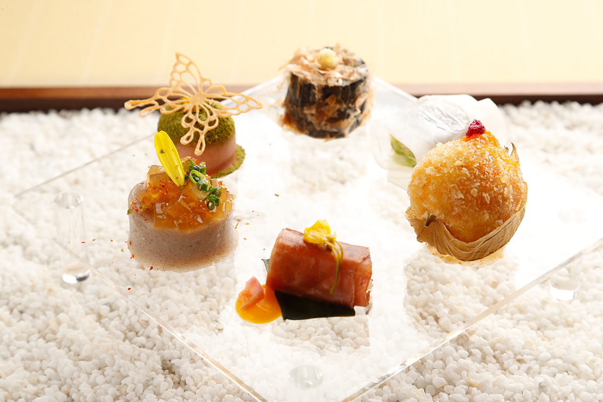
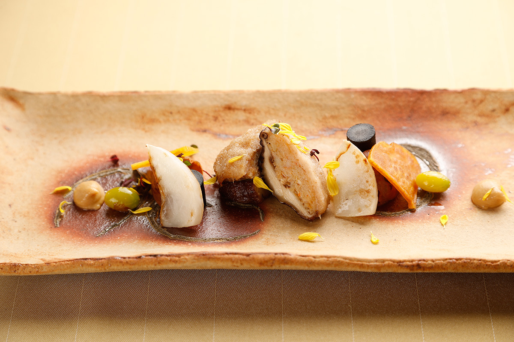
Дальше настала очередь рыбы. «Шум волн» от cucina NORD IBARAKI шеф посвятил Тэнсину-рыболову. Мясное блюдо «Синхроничность» от французского ресторана «Сэссонъан» из Хитатиомии изображало произведение искусства, которое рождается на встрече автора и зрителя. Кульминацией стало ризотто «Добу-дзиру дзосуй с лепестками» от «Сёкусай Дайсин» с густым вкусом морского чёрта, главного улова порта Оцу.
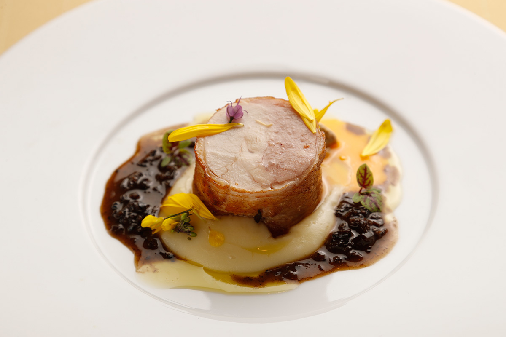
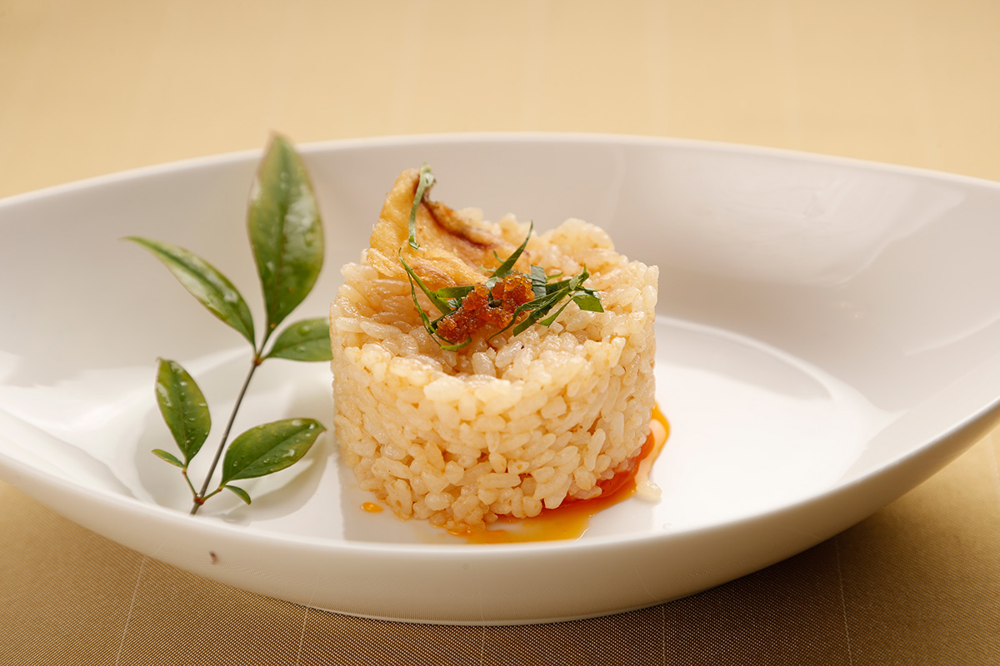
На десерт подали мильфей «Снег» из яблок посёлка Даиго, который сделали вместе «Сэссонъан» и cucina NORD IBARAKI, а закончился ужин трюфелями из сладкой пасты местной фасоли адзуки «Мусумэ кита» от «Уносима вилла».
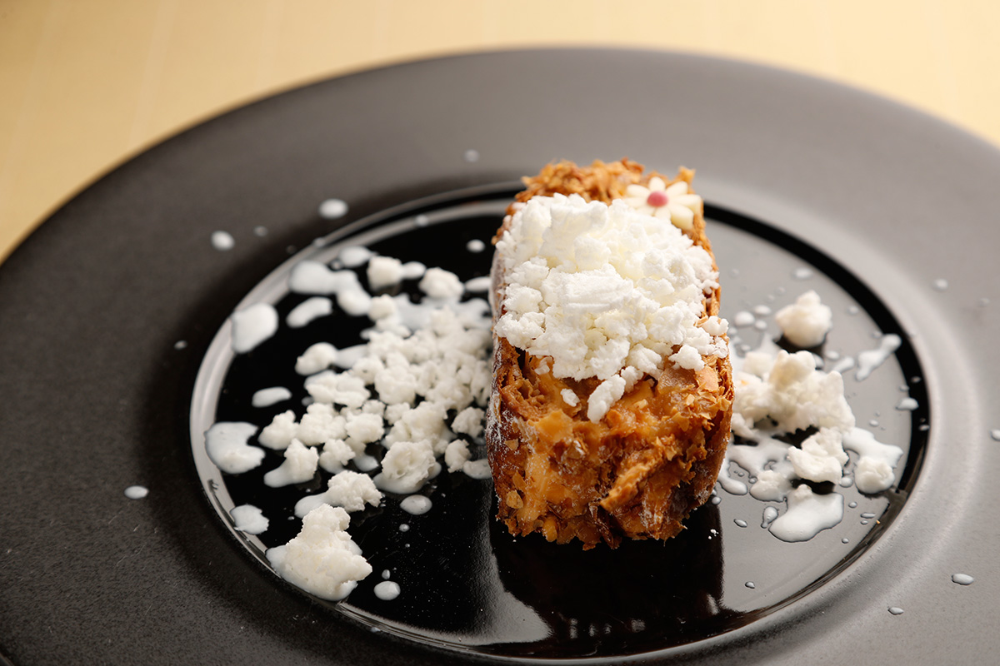
В конце шефы обошли каждый стол, и ужин закончился долгими аплодисментами.
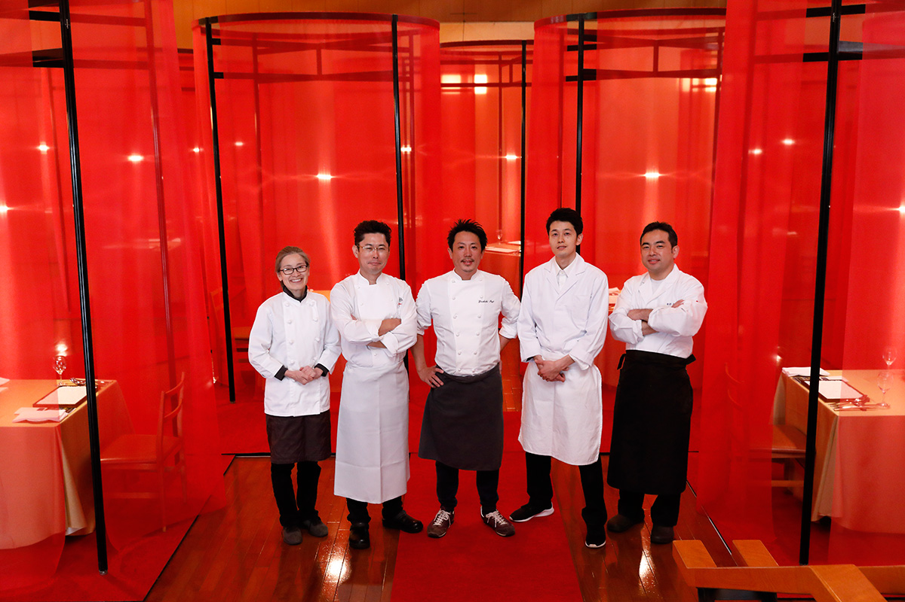
В феврале и марте 2021 года те же повара и ещё несколько ресторанов и гостиниц, всего десять заведений, провели «Ярмарку гастрономии севера Ибараки» и несколько недель подавали особые блюда из местных продуктов. Ниже собраны рестораны и гостиницы из этих двух историй, где можно попробовать кухню севера Ибараки.
Где попробовать
Рестораны и гостиницы севера Ибараки
cucina NORD IBARAKI, Хитати
Итальянский ресторан стоит в жилом квартале, в 12 минутах пешком от станции Хитати-Тага. Шеф хочет, чтобы люди лучше знали сезонные продукты Ибараки, и готовит без химических приправ, с большим количеством овощей, выращенных без пестицидов. Цель ресторана в том, чтобы превращать продукты Ибараки в итальянскую кухню и показывать её миру.
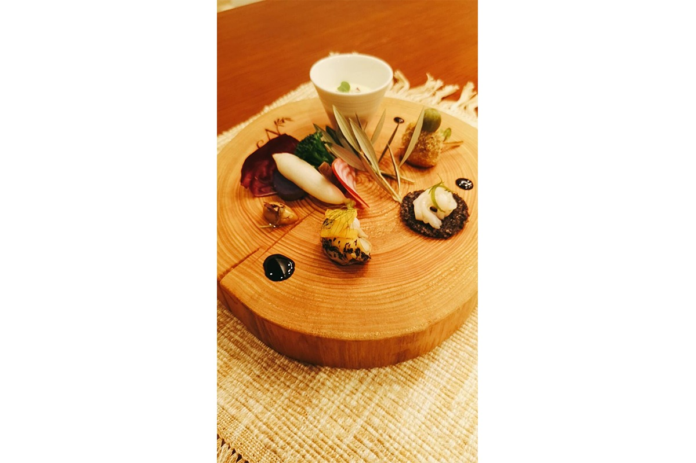
cucina NORD IBARAKI
- Адрес
- префектура Ибараки, Хитати, Суэхиро-тё, 2-1-32
- Телефон
- +81 294-32-0369
- Сайт
- nord-ibaraki.jp
«Уносима вилла», Хитати
Гостиница стоит на берегу Отадзири, одного из красивых мест Хитати. Впереди ничто не закрывает Тихий океан, а солнце встаёт прямо из-за скал. К берегу прилетают бакланы, и он похож на частный пляж. Здесь бывал в странствиях поэт-монах Сайгё (1118–1190), один из самых известных поэтов старой Японии, и сочинял стихи. Кухня гостиницы бережно обращается с местными продуктами и делает из них блюда, вкусные и лёгкие для тела.
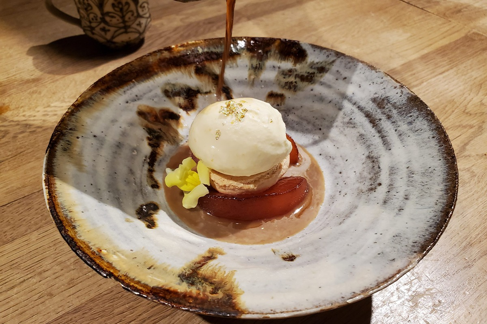
«Уносима вилла»
- Адрес
- префектура Ибараки, Хитати, Хигаси-Намэкава-тё, 5-10-1
- Телефон
- +81 294-42-4404
«Сёкусай Дайсин», Китаибараки
Ресторан в порту Оцу, который славится морским чёртом. На ужине 2020 года шеф ресторана показал его в ризотто по мотивам «добу-дзиру», густого супа из морского чёрта.
«Сёкусай Дайсин»
- Адрес
- префектура Ибараки, Китаибараки, Оцу-тё, Кита-мати, 2-5-18
- Телефон
- +81 293-46-5511
Рёкан «Ямадая», Хитатиота
Рёкан в Хитатиоте, шеф которого на ужине 2020 года уложил в одну чашу горы и море Идзуры.
Рёкан «Ямадая»
- Адрес
- префектура Ибараки, Хитатиота, Орихаси-тё, 1409
- Телефон
- +81 294-82-2236
«Юносава косэн», Хитатиомия
Гостиница с минеральным источником в Хитатиомии. На ярмарку 2021 года она приготовила ужин из курицы «Окукудзи сямо» и говядины «Хитати-гю».
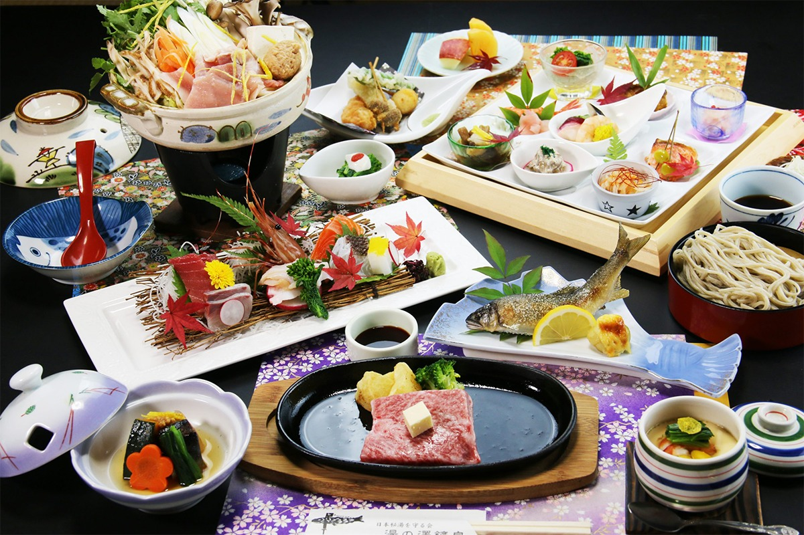
«Юносава косэн»
- Адрес
- префектура Ибараки, Хитатиомия, Ямагата, 4849